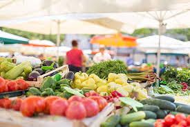

Cultivo
O cultivo é o primeiro passo no processo dos alimentos, onde as sementes são plantadas e cuidadas até que se desenvolvam.

colheita
A colheita ocorre quando os alimentos estão maduro e prontos para serem retirados do campo.

Transporte
Após a colheita, os alimentos são transportados para os centros de distribuição e mercados.

mercado
Nos mercados, os alimentos são vendidos aos consumidores finais, prontos para serem levados para casa.
